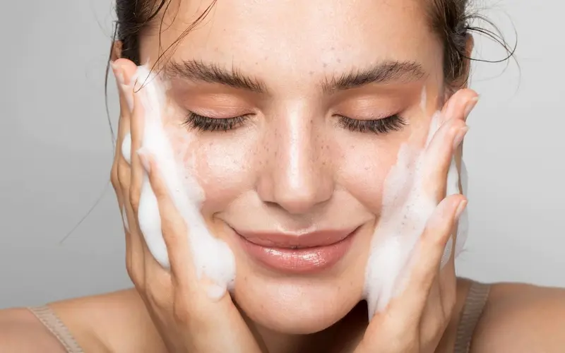
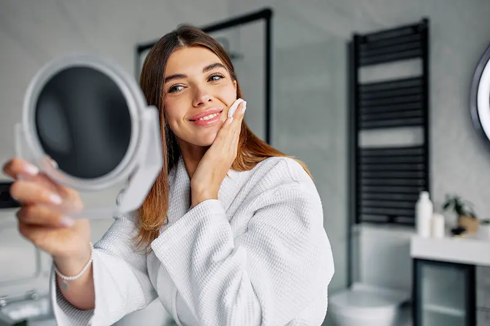
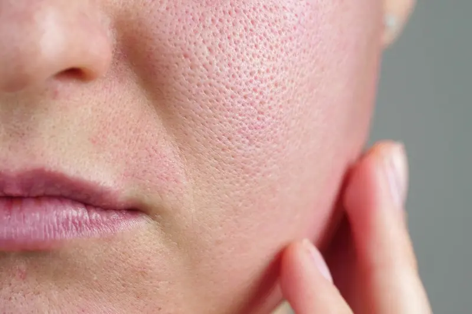

Finish mat: secretul unui ten de porțelan și fortificarea pereților porilor dilatați.Ce sunt porii dilatați și de ce devin aceștia vizibili?
Porii dilatați sunt rezultatul unei activități excesive a glandelor sebacee și al pierderii elasticității pereților porilor. Aceștia nu sunt doar o particularitate a reliefului cutanat, ci un semnal că pielea se află într-o stare de hiperseboree: excesul de sebum destinde „gura” porului, făcându-l vizibil cu ochiul liber.
Este important de înțeles: porii sunt canale naturale care nu pot fi „închiși” definitiv, însă pot fi făcuți aproape invizibili. În România, unde vara combină căldura extremă cu praful urban, sebumul se oxidează rapid, formând puncte negre (comedoane oxidate). Fără o curățare profundă sistemică, porii se dilată și mai mult, ceea ce duce în timp la un relief neregulat și la pierderea densității pielii.
Cauzele dilatării porilor: de la genetică la poluarea urbană
Principalul declanșator este predispoziția genetică către tenul gras, însă textura pielii este un proces multifactorial. Pe lângă ereditate, un rol cheie îl joacă „elastoza solară”: radiațiile ultraviolete distrug colagenul din jurul porilor, făcându-i să piardă susținerea și să se „lase”, devenind mai evidenți.
Un factor critic pentru regiunea noastră este combinația dintre apa dură și poluarea atmosferică. În marile orașe, microparticulele de smog se amestecă cu sebumul, creând dopuri dense. O strategie corectă pentru un ten neted între 20 și 40 de ani trebuie să se bazeze nu pe uscarea agresivă cu alcool, ci pe exfoliere de calitate (acizi BHA) și seboreglare cu ajutorul activelor moderne, precum niacinamida și zincul.

Reguli fundamentale în tratamentul porilor dilatați
Ingrediente cheie pentru minimizarea porilor și un relief neted
| Ingredient | Acțiune asupra porilor și texturii |
|---|---|
| Acid Salicilic (BHA) | Curăță porii în profunzime „din interior”, dizolvă punctele negre și uniformizează relieful neregulat al pielii. |
| Niacinamidă (B3) | Reduce activitatea glandelor sebacee, minimizează vizibil porii și întărește bariera cutanată. |
| Zinc PCA | Oferă un efect matifiant puternic, inhibă proliferarea bacteriană și previne inflamațiile. |
| Argilă (Kaolin/Bentonită) | Acționează ca un „aspirator” pentru pori: absoarbe excesul de sebum și împrospătează instantaneu aspectul tenului. |
Greșeli care dilată porii și compromit relieful tenului
Cum obții un relief perfect uniform?
Secretul unui ten cu „efect de filtru” nu constă în peelinguri agresive, ci în controlul sistemic asupra purității porilor și producției de sebum. Porii dilatați necesită disciplină: nu pot fi „șterși”, dar pot fi menținuți curățiți și retractați.
Pentru rezultate durabile, folosește schema: dimineața — seboreglare calitativă și matifiere (Niacinamidă + fluid SPF lejer), seara — curățare profundă și exfoliere (Acizi BHA sau Retinoizi). Această abordare va permite nu doar curățarea porilor, ci și fortificarea pereților acestora, redând feței o textură netedă, un aspect îngrijit și o strălucire sănătoasă, fără exces de sebum.

Protocolul de minimizare a porilor: Dimineața vs Seara
Pentru a obține efectul de „ten de porțelan”, este esențial să divizezi rutina în două faze: matifiere și sebocontrol pe parcursul zilei și curățarea profundă a pereților porilor pe timp de noapte.
| Momentul zilei | Etapa de îngrijire | De ce este necesar? |
|---|---|---|
| Dimineața | Niacinamidă + Fluid SPF lejer | Reduce producția de sebum pe parcursul zilei și protejează colagenul din jurul porilor de degradarea solară. |
| Seara | Acizi BHA (Salicilic) / Retinoizi | Dizolvă dopurile de sebum „din interior”, curăță gura porului și stimulează reînnoirea reliefului cutanat. |
| Îngrijire (zilnic) | Double Cleansing (Ulei + Gel) | Elimină complet amestecul de transpirație, praf și SPF, prevenind dilatarea porilor și formarea punctelor negre. |
| Îngrijire SOS | Măști cu argilă / Pudre enzimatice | Absorb instantaneu excesul de grăsime și poluează delicat pielea, minimizând vizual porii dilatați. |
Sfat pentru România: În climatul poluat al marilor orașe (București, Cluj, Iași), porii se blochează de două ori mai repede pe timp de vară. Alegeți protecție solară cu mențiunea "Oil-Free" sau "Non-comedogenic". Cremele obișnuite de plajă sunt prea grele pentru tenul poros și pot provoca inflamații.
Mediul urban și porii de tip „crater”
În marile aglomerări urbane, combinația de gaze de eșapament și praf calcaros creează efectul de „pori sufocați”. Particulele fine de poluare (PM 2.5) se amestecă cu sebumul la suprafața feței, transformându-l într-o substanță densă care dilată fizic porul, transformându-l într-un „crater” vizibil.
Protecția împotriva stresului oxidativ este critică: sub influența razelor UV, sebumul din interiorul porului se oxidează, ducând la apariția punctelor negre persistente. Dubla curățare seara și utilizarea cosmeticelor cu antioxidanți (ceai verde, resveratrol) vor ajuta la întreruperea ciclului de dilatare a porilor și la redarea unui aspect neted și șlefuit pielii.
Întrebări frecvente despre porii dilatați
Pot fi „închiși” porii definitiv?
Porii sunt canale vitale pentru respirația pielii și eliminarea sebumului, deci este imposibil să-i „ștergem”. Totuși, aceștia pot fi făcuți invizibili din punct de vedere vizual. În climatul din România, cheia unor pori mici este curățenia. Imediat ce dizolvi dopul de sebum cu ajutorul acizilor BHA, pereții porului se retractează. Important este să nu îi lași să se blocheze din nou.
Ce proceduri în clinicile din România sunt cele mai eficiente?
Pentru curățarea profundă și minimizarea porilor, specialiștii recomandă adesea peeling-ul cu carbon (Laser Carbon Peel) sau HydraFacial. Aceste metode elimină eficient impuritățile și retractează gura porului. Totuși, fără o susținere acasă cu niacinamidă și o demachiere corectă, efectul procedurilor în mediul urban poluat va dispărea după 1-2 săptămâni.
Ajută benzile de nas sau măștile de tip „peel-off” la micșorarea porilor?
Aceasta este una dintre cele mai mari greșeli. Benzile elimină doar partea superioară a dopului de sebum și traumatizează pielea, lărgind marginile porului. Pe termen lung, acest lucru face porii și mai vizibili. Alternativa sigură este uleiul hidrofil și acidul salicilic, care dizolvă grăsimea fără a întinde țesuturile.
Este adevărat că apa rece ajută la închiderea porilor?
Apa rece provoacă doar un spasm vascular de scurtă durată, creând o iluzie de micșorare timp de 5-10 minute. O reducere reală a porilor necesită lucrul asupra elasticității. Dacă pielea pierde colagen (din cauza soarelui sau a vârstei), porii devin ovali și lărgiți. De aceea, SPF 50 este la fel de important pentru tenul poros ca și pentru combaterea ridurilor.